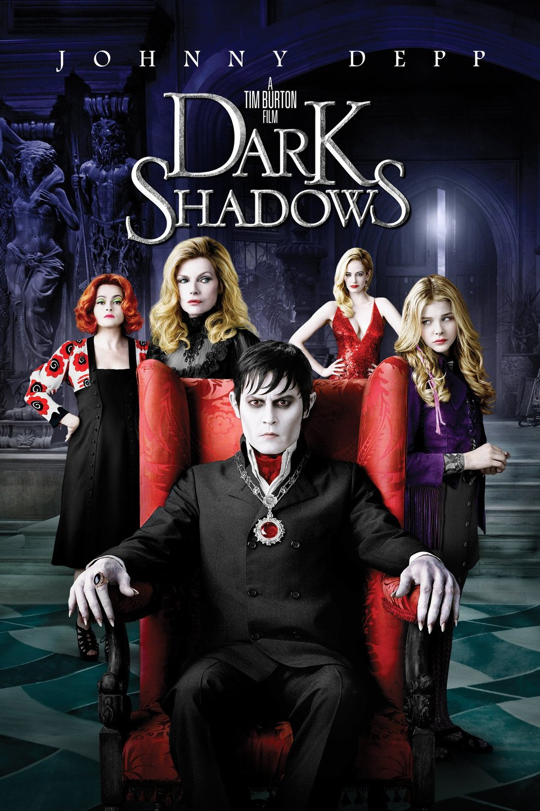

Kevin (Macaulay Culkin), who doesn't like his family very much, spends the night on the roof of their house after his punishment, and when he wakes up in his bed the next day, he realizes that his family isn't home, they forgot about him on the way to vacation. Panicking at first, Kevin soon realizes that this is an opportunity and enjoys solitude.
Stars: Macaulay Culkin / Kevin McCallister --- Daniel Stern / Marv Murchins --- Catherine O'Hara / Kate McCallister --- Kieran Culkin / Fuller McCallis
IMDB Rating: 7.7/10
Deadpool(2016)
Deadpool, the most unusual anti-hero of Marvel Comics, is the story of Wade Wilson, a former Special Forces soldier, when a difficult experiment conducted on him left him alone with his accelerated self-healing power and lower ego.
Charlie Chaplin's iconic Little Tramp character struggles to survive in the modern, industrialized world. The film is a commentary on the desperate employment and financial conditions many people faced during the Great Depression — conditions created, in Chaplin's view, by the efficiencies of modern industrialization.
Stars: Charlie Chaplin / A Factory Worker --- Paulette Goddard / A Gamin --- Henry Bergman / Cafe Proprietor --- Al Ernest Garcia / President of the Electro Steel Corp.
IMDB Rating: 8.5/10

Dark Shadows(2012)
Barnabas is a vampire who has been cursed by a jealous witch and taken away from his countship while living a magnificent life and has been locked in a coffin underground for about 200 years. in 1972, a storm breaks and his coffin is taken out of the underground, and thanks to curious villagers, he is now a free vampire.
Stars: Johnny Depp / Barnabas Collins --- Jonathan Frid / Guest #4 --- Helena Bonham Carter / Julia Hoffman --- Michelle Pfeiffer / Elizabeth Collins Stoddard